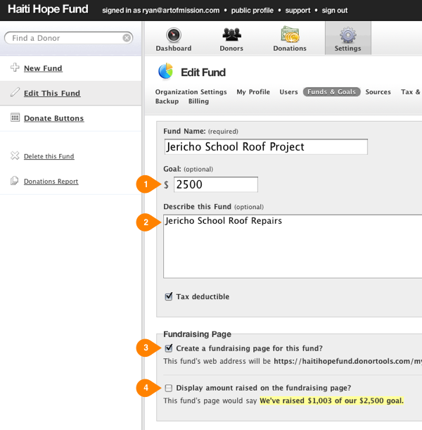
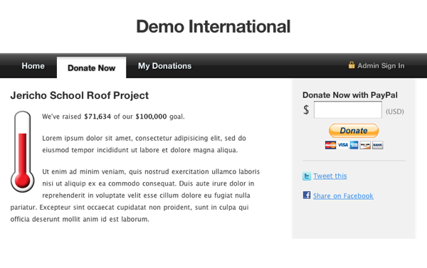

Creating Fundraising Pages
Setting up online donations automatically activates your fundraising pages. Each fund that you choose can have its own fundraising page. If you set up PayPal, then a “Donate Now with PayPal” form will show up on that fund’s page.
Here’s how to set up a fundraising page for a fund.
First, go into the fund you want to edit, or create a new fund. Then…
- Set a goal for the fund (optional). If you set a goal, the thermometer widget will show up on the fundraising page.
- Write a description (optional). Tell people a little (or a lot) about the fund that you’re raising money for.
- Check the box for “Create a fundraising page”. (Make a note of the web address – this will be your fundraising page’s url.)
- If you want the public to see how much money you’ve raised for this fund, check the box for “Display amount raised”.
Merge Fields
You can use special merge fields in your fund’s description to display the amount raised, the goal, and the number of donors. Merge fields are contained between double brackets. For example, if you write {{ fund.goal }}, then your fundraising page will show the dollar amount of your goal. Available merge fields are:
{{ fund.goal }}- the dollar amount of the fundraising goal.{{ fund.raised }}- the dollar amount raised so far.{{ fund.remaining }}- the dollar amount remaining in your goal.{{ fund.percent_raised }}- percent showing how close you are to your goal (minus the percent sign).{{ fund.number_of_donors }}- how many individual donors have donated to this fund.{{ fund.number_of_donations }}- total number of donations to this fund.{% fund.donors %}- an array of donors who have donated to your fund.{% fund.donations %}- an array of donations to this fund.
For example:
{{ fund.number_of_donors }} donors have helped us raise {{ fund.raised }} of our {{ fund.goal }} goal - that's {{ fund.percent_raised }}%!
would output something like:
254 donors have helped us raise $74,235 of our $100,000 goal - that's 74%!
That’s it! Save your fund, and then go visit your fundraising page.

Your fundraising page will look something like this:
